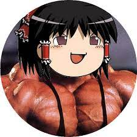
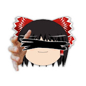

FPSgamer201 (本家)
2012年 にチャンネルを開設。その後SCPやGmodなどの実況や茶番でファンを獲得。
2020年後半頃から一部の動画が削除や限定公開されるなどの動きがあり、
精神的な負担を心配する声も視聴者から寄せられていた。
その後2025/5/5に最後の配信をもって引退、チャンネルを削除し、多大な反響が起こった
FPSgamer301
2023/2/26 にチャンネルを開設。
主にFPSgamer201のパロディ動画を投稿している。
現在pcの環境の問題で動画を投稿していないが、改善後、動画を出す予定だと話していた。
FPSgamer...?
2025/5/7 にチャンネルを開設。
主に本家のパロディ(リスペクト)動画を投稿している。動画内容も本家と近い物となっている。
Discordのコミニュティサーバーもあり、今後の活躍が期待できる。